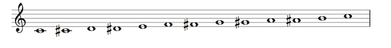
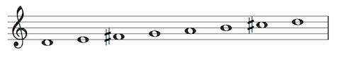
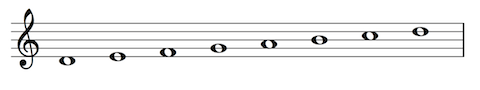

Scales
A scale is a succession of pitches ascending or descending in steps. Usually, the pitches are each notated with different letter names, though this isn't always possible or desirable.
The Chromatic Scale
A scale consisting entirely of half steps.

The major scale
A major scale consists of eight whole (W) and half (H) steps in the following succession: W-W-H-W-W-W-H.

The natural minor scale
A natural minor scale consists of eight whole (W) and half (H) steps in the following succession: W-H-W-W-H-W-W.
